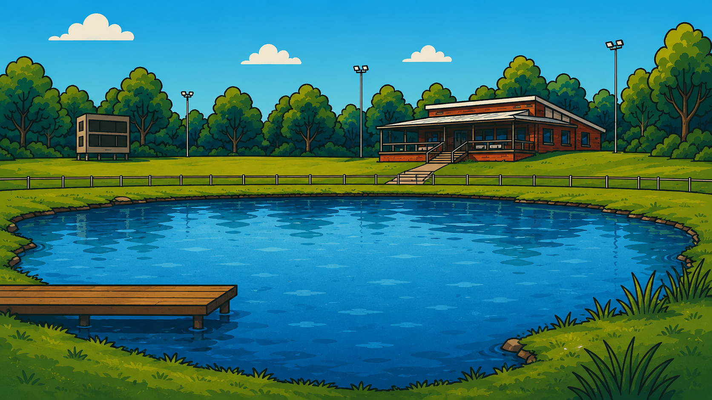

Taipans Cricket Club
Duck Pond — Stress Test v0.31
Mobile entry alignment, orientation-safe animation and live movement depth sorting.



ROUND TEST
0 ducks in the pond
- 1Hathaway6 ducks
- 2Smith5 ducks
- 3Jones4 ducks
Load 50 or 60 ducks to stress-test the pond.